Фауна риб Криворіжжя нараховує 36 видів, із 75, поширених на території Дніпропетровської області.
Десять видів риб занесені до «Червоної книги Дніпропетровської області». Червонокнижні види риб – річковий минь (Lota lota L.), звичайний пічкур (Gobio gobio L.), звичайний рибець (Vimba vimba L.), звичайний ялець (Leuciscus leuciscus L.), звичайний в’язь (Leuciscus idus idus L.), звичайний (золотий) карась (Carassius carassius L.), звичайний в’юн (Misgurnus fossilis L.), звичайний вусатий голець (Barbatula barbatula L.), триголкова колючка (Gasterosteus aculeatus L.).
Зарегулювання стоку рік Інгулець, Саксагань, Кам'янка, Бокова, Боковенька та малих річок призвело до переформування фауністичних комплексів і трофічних груп риб. Фауна збагачена інтродукованими видами: білий амур (Ctenopharyngodon idella Valenciennes), сріблястий карась (Carassius auratus gibellio Bloch), білий товстолобик (Hypophthalmichthys molitrix Valenciennes). Із ріки Дніпро каналом «Дніпро–Кривий Ріг» та рікою Інгулець проникли тюлька (Clupeolla delicatula Nordmann), голка-риба пухлощока (Syngnathus nigrolineatus Eichwald), триголкова колючка (Gasterosteus aculeatus L), бичок-кругляк (Neogobius melanostomus Pallas).
У Південному водосховищі та кількох затоплених кар’єрах зустрічається сонячний окунь, або сонячна риба синьозяброва (Lepomis gibbosus L.), завезена ще в 19 столітті на територію Європи з Канади як декоративна риба, яка в наші природні та штучні водойми попала, очевидно,завдяки акваріумістам. Даний вид не має промислового значення, хоча є їстівним.
Господарче значення мають плітка (Rutilus rutilus L.), густера (Blicca bjoerkna L.), лящ (Abramis brama L.), короп (Cyprinus carpio L.), звичайний окунь (Perca fluviatilis L.), звичайний судак (Lucioperca lucioperca L.), звичайна щука (Esox lucius L.), поширені у природних і штучних водоймах. У риборозплідних господарствах та ставках розводять товстолобика, білого амура, сріблястого карася, коропа.
Зрідка у природних водоймах зустрічаються головень (Leuciscus cephalus L.), звичайний в'язь (Leuciscus idus L.), золотистий карась (Carassius carassius L.), звичайний сом (Silurus glanis L.). Широко поширені малоцінні види риб − лин (Tinca tinca L.), краснопірка (Scardinius erythropthalmus L.), звичайний пічкур (Gobio gobio L.), верховодка (Alburnus alburnus L.), звичайний в'юн (Misgurnus fossilis L.), звичайний йорж (Gymnocephalus cernua L.), звичайна щипівка (Cobitis taenia L.).
На півдні Криворіжжя, у каналі Дніпро–Кривий Ріг та Південному водосховищі надзвичайно рідкісний звичайний рибець (Vimba vimba L.).
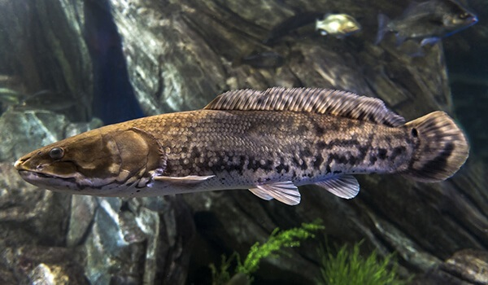
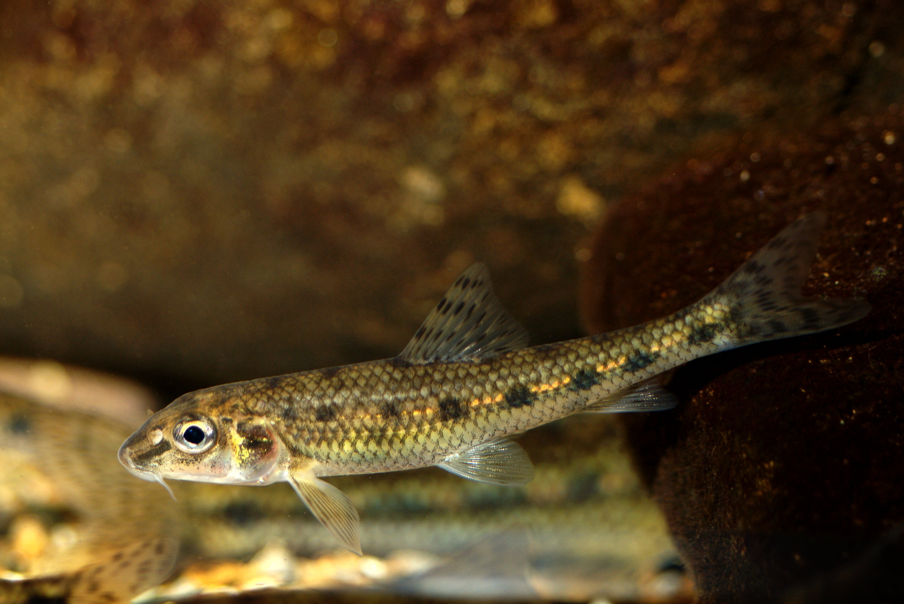
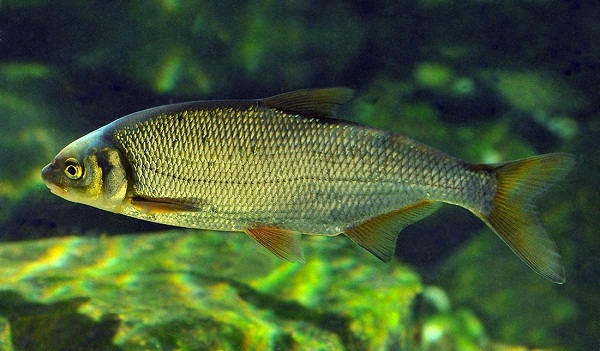
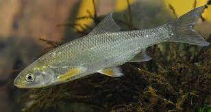
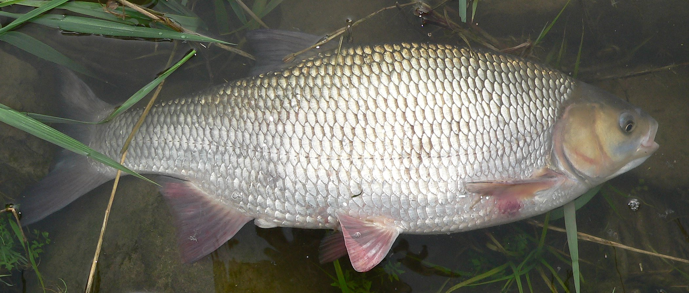
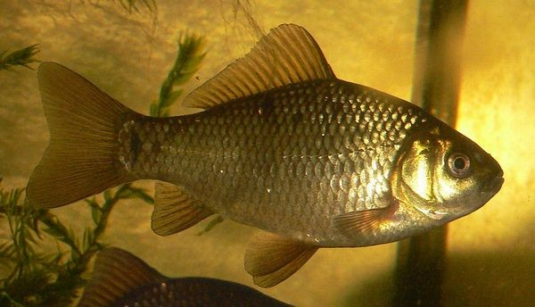
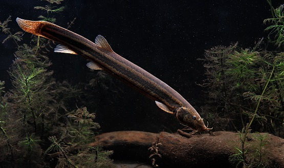
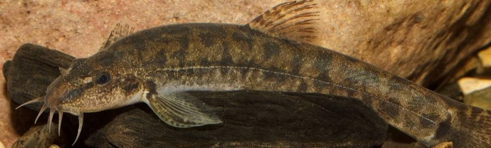
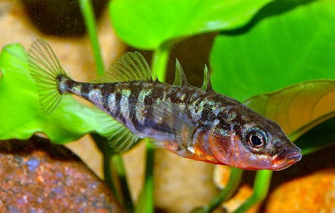
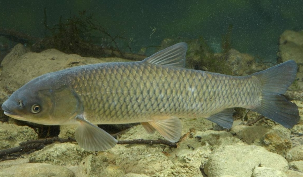
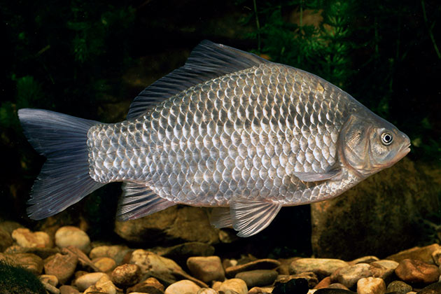
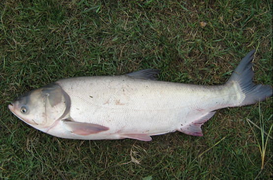

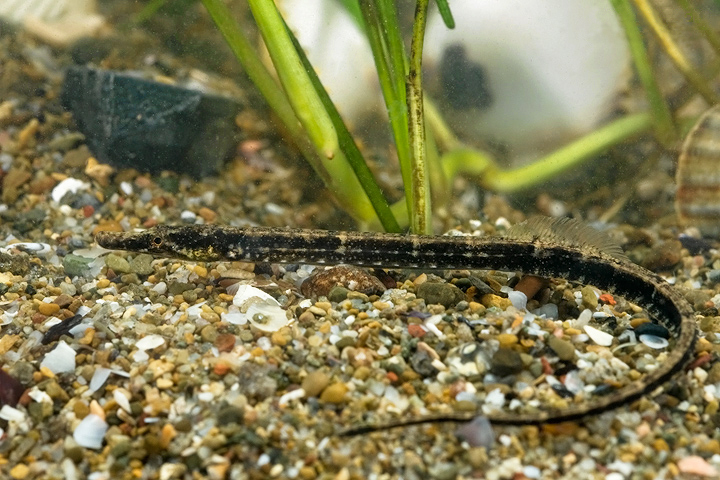
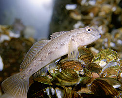
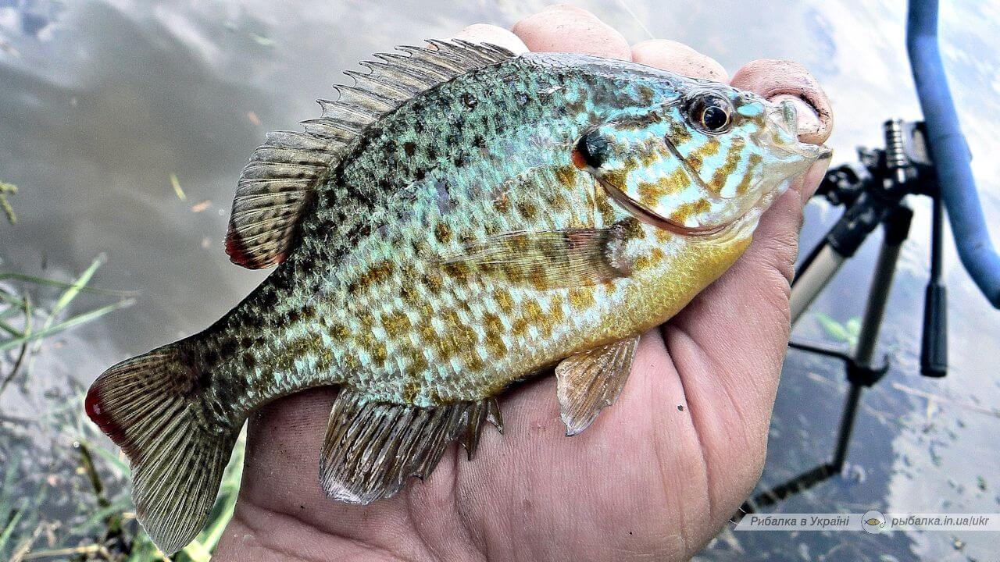
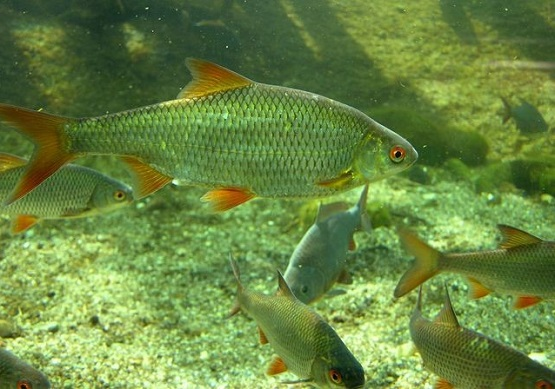
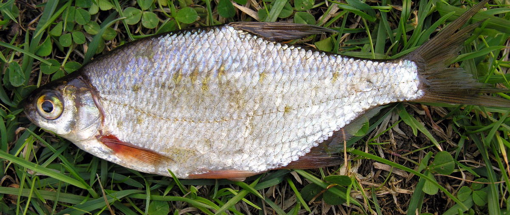
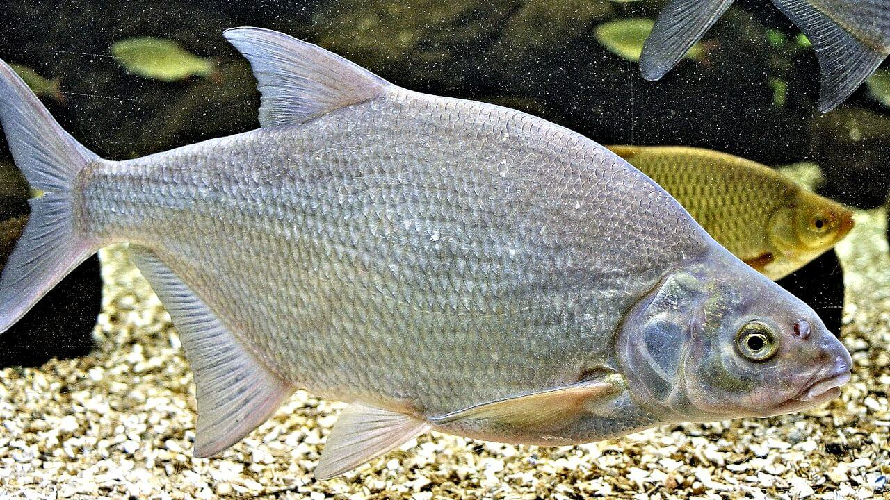
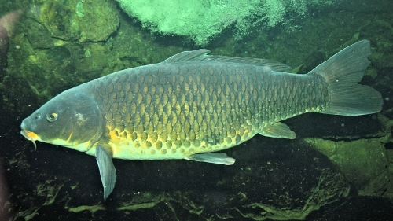
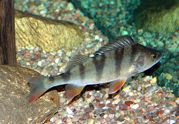
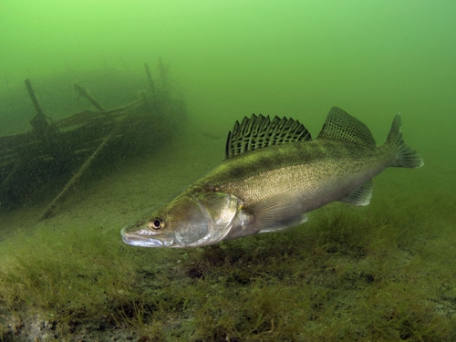
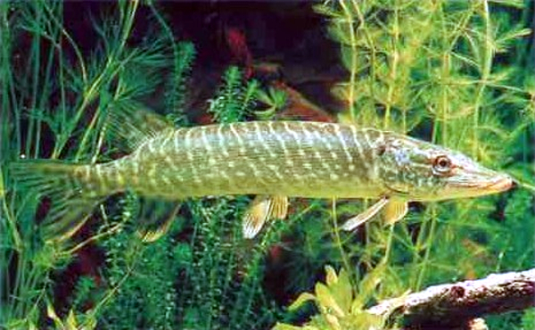
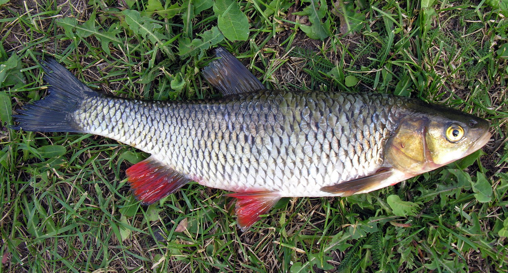
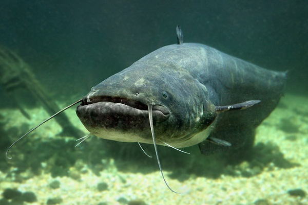
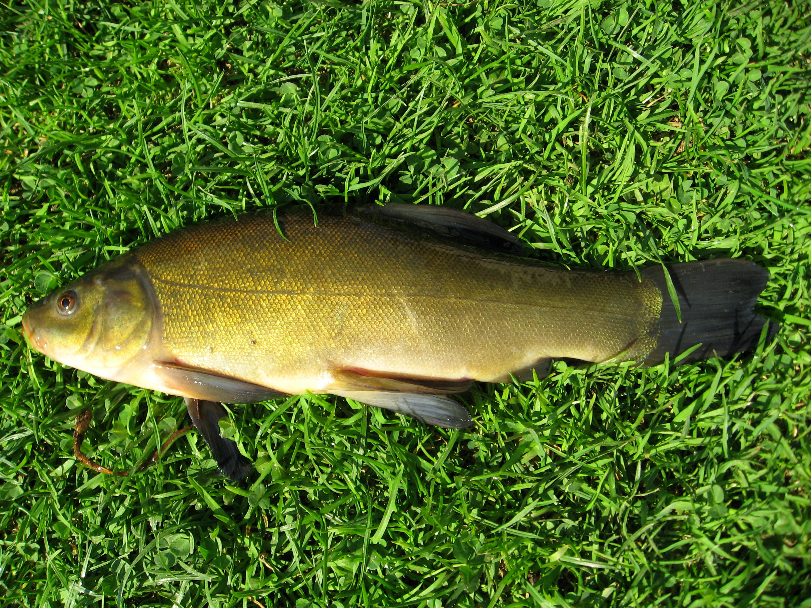
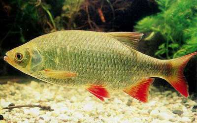
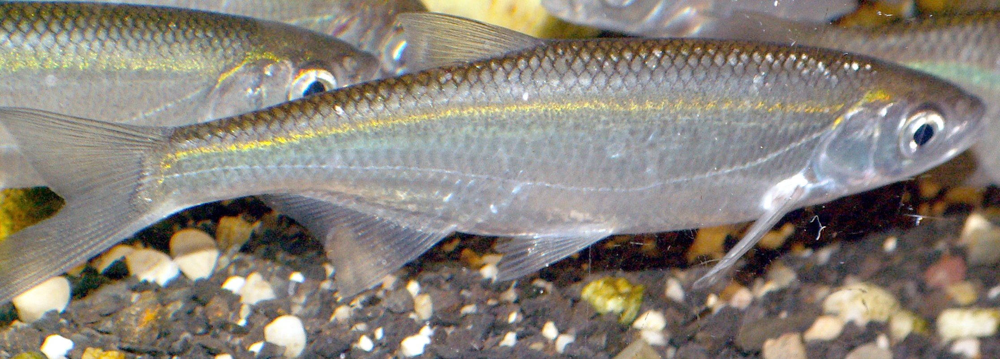
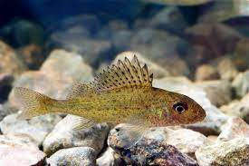
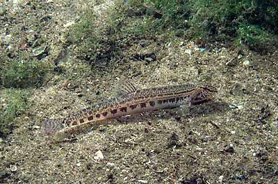